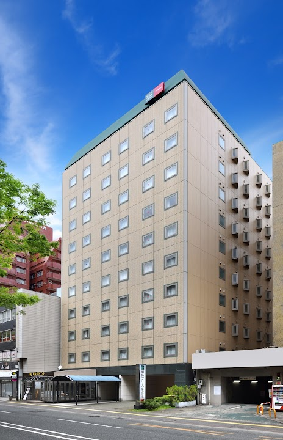

이 호텔은 불친절 관련 불만이
후쿠오카 평균보다 1.9배 많아요!

위치
2 Chome-9-11 Daimyo, Chuo Ward, Fukuoka, 810-0041 일본 · 1박 약 10만원 (10~20만원 가격대)
이 호텔에서 실망할 확률
16%
후쿠오카 평균(12%)보다 주의가 필요한 수준이에요
최근 투숙객 100명 중 16명이 심각한 문제를 언급했어요
최근 투숙객 100명 중 16명이 심각한 문제를 언급했어요
우수
평균 12%
위험
최근 리뷰일수록 높은 가중치로 반영됩니다
분석 리뷰 168건 · 기준 2026년 3월
분석 리뷰 168건 · 기준 2026년 3월
카테고리별 위험도
후쿠오카 평균 = 50 · 3배 나쁘면 100
하카타 그린 호텔 텐진
후쿠오카 평균
리스크 상세 분석
대분류 6개 · 소분류 20개 전체 — 숫자는 위험도(0~100), 후쿠오카 평균이면 50이에요
🧼위생 경보
양호 · 위험도 14 · 후쿠오카 상위 2%
양호평균 50위험
-
침구/바닥 청결얼룩 · 머리카락 · 먼지14
-
청소 서비스청소 불량 · 쓰레기 방치16
-
해충/곰팡이벌레 · 빈대 · 곰팡이0건11
👂오감 지옥
양호 · 위험도 34 · 후쿠오카 상위 32%
양호평균 50위험
-
벽간/외부 소음옆방 소리 · 도로 소음38
-
악취 역류하수구 · 담배 · 곰팡내17
-
기기 소음에어컨 · 냉장고 소음65
🏚️시설 사기단
주의 · 위험도 50 · 후쿠오카 하위 42%
양호평균 50위험
-
공간/노후화비좁음 · 낡은 시설53
-
냉난방/수압냉난방 불량 · 수압 약함14
-
네트워크/TV와이파이 · TV 불량35
🗺️동선 파괴자
양호 · 위험도 31 · 후쿠오카 상위 29%
양호평균 50위험
-
역/거점 접근성역에서 멀다 · 찾기 어려움0건11
-
지형적 난관언덕 · 계단57
-
주변 편의성편의점 · 식당 없음0건11
-
허위 위치 정보위치 정보 불일치0건11
💬불친절 레이더
위험 · 위험도 72 · 후쿠오카 하위 10%
양호평균 50위험
-
응대 태도불친절 · 무시36
-
처리 지연체크인 지연 · 대기16
-
사후 대처보상 거부 · 무대응100
-
소통 불가언어 소통 문제0건11
🔒안전 그림자
양호 · 위험도 11 · 후쿠오카 상위 8%
양호평균 50위험
-
보안 시설도어락 · CCTV0건11
-
주변 치안밤길 · 우범지대0건11
-
사생활 보호방음 · 프라이버시0건11
이 카테고리는 문제 언급 리뷰가 거의 없어요 🎉
위험 70+주의 45~70양호 ~45
불만 리뷰 5건 미만 소분류는 위험 등급을 붙이지 않아요 · 인용문은 리뷰 원문 발췌입니다
구글 별점 분포
최근 1년 2점 이하 리뷰 비율은 6% 입니다.
총 132건
- 1점3%
- 2점5%
- 3점13%
- 4점33%
- 5점47%
리뷰
심각도 · 최신순
이런 호텔은 어떠세요?
비슷한 가격대·가까운 위치에서 실망 확률이 낮은 순이에요
-
양호실망 확률 4%

도큐스테이 후쿠오카 텐진
東急ステイ 福岡天神구글 4.4 · 리뷰 1,354개1박 약 11만원 -
양호실망 확률 4%

다이와 로이넷 호텔 후쿠오카 - 니시나카스
DEL style 福岡西中洲 by Daiwa Roynet Hotel구글 4.1 · 리뷰 667개1박 약 12만원 -
양호실망 확률 5%

호텔 몬토레 후쿠오카
ホテルモントレ福岡구글 4.4 · 리뷰 1,056개1박 약 11만원 -
양호실망 확률 5%

토요코인 하카타 니시나카스
東横INN博多西中洲구글 3.9 · 리뷰 1,366개1박 약 11만원 -
양호실망 확률 5%

LIBERATED HOTEL HARUYOSHI KAICHI
LIBERATED HOTEL 春吉開地구글 4.5 · 리뷰 157개1박 약 14만원 -
양호실망 확률 6%

코트 호텔 후쿠오카 텐진
コートホテル福岡天神구글 3.8 · 리뷰 726개